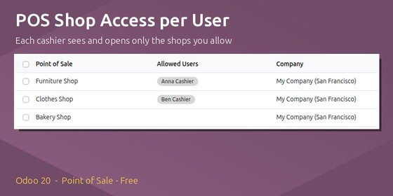
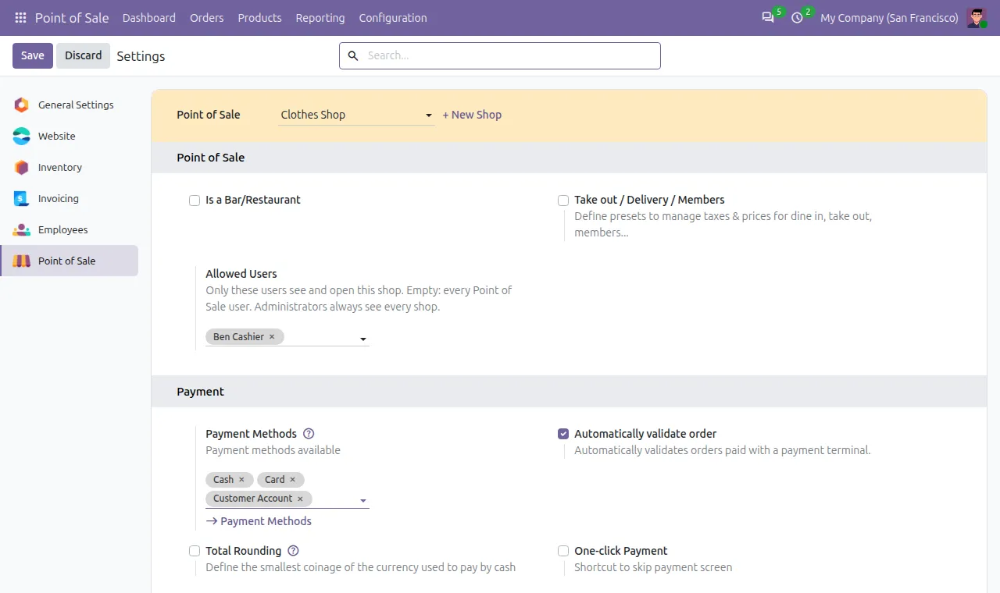
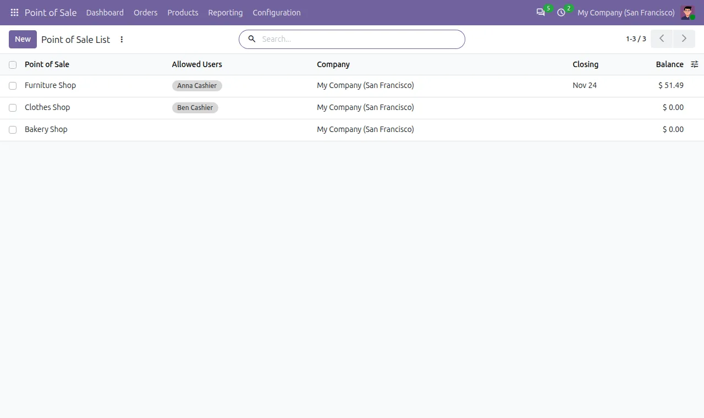
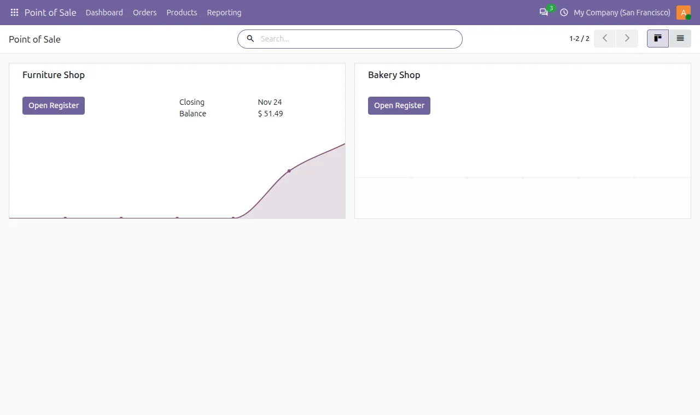
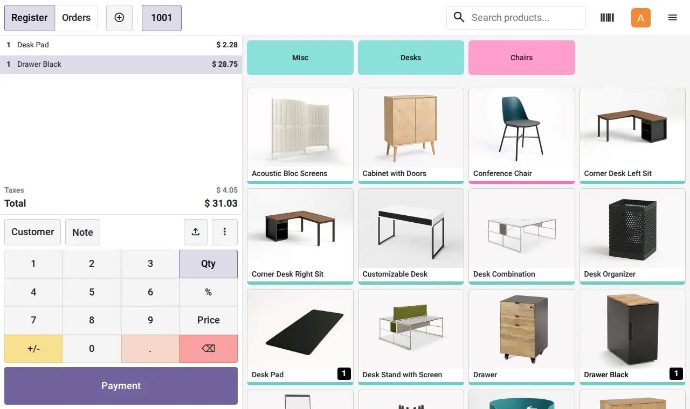
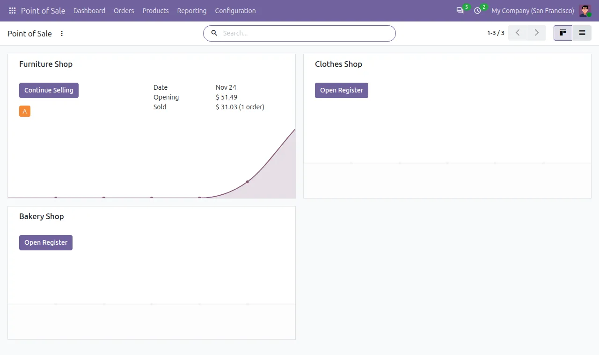

POS Shop Access per User - Restrict Point of Sale by User
Restrict Point of Sale access per user: each cashier sees and opens only the POS shops you allow. Administrators keep every shop.
- Price
- Free
- Odoo versions
- 16.0
- 17.0
- 18.0
- 19.0
- 20.0
- Technical name
tamadoo_pos_user_restrict- License
- LGPL-3

Text and screenshots below are from the Odoo 20.0 version of this module.
Each cashier sees and opens only the Point of Sale shops you allow. Administrators keep every shop.
What it does
In standard Odoo every Point of Sale user sees every shop on the dashboard and can open any register. With several branches or counters that is a mess, and a risk. This module adds an Allowed Users list to each shop.
- Cashiers see only their shops: the ones that list them, plus shops with an empty list.
- No back door: a direct link to another shop's register sends the cashier back to the dashboard, no session is opened.
- Administrators see everything: Point of Sale administrators and Settings administrators always see every shop.
- Empty list = open to every Point of Sale user, so nothing changes until you fill it in.
- Selling, payments and closing the register work as usual for the allowed cashier (tested as a Point of Sale user without any other rights).
How to use
1. Choose who may open a shop
Point of Sale › Configuration › Settings: pick the shop at the top, then fill in Allowed Users and save.

2. See all shops and their users at a glance
Point of Sale › Configuration › Point of Sales shows an Allowed Users column.

3. The cashier only sees the allowed shops
Anna is allowed in the Furniture Shop; the Bakery Shop is open to everyone; the Clothes Shop is Ben's and does not appear.

4. She sells as usual

5. The manager still sees every shop

Requirements
- Odoo 20 Community or Enterprise — Point of Sale (
point_of_sale). - Cashiers must be Point of Sale / User, not Administrator: administrators always see every shop.
- The list controls which shops a user can see and open. Orders and reports already recorded stay visible as before.
Related apps
- POS Void Approval - Manager PIN to Delete Order Line: a cashier cannot remove a line without the manager's PIN.
- POS Shift Handover - Cashier Shift Cash Count: count and hand over the cash drawer between cashiers.
- POS Dashboard for Managers - Today's Sales per Shop: today's sales of every shop on one screen.
Tamadoo · tama.odoo@gmail.com
Get POS Shop Access per User
Questions before buying? Write to tama.odoo@gmail.com.